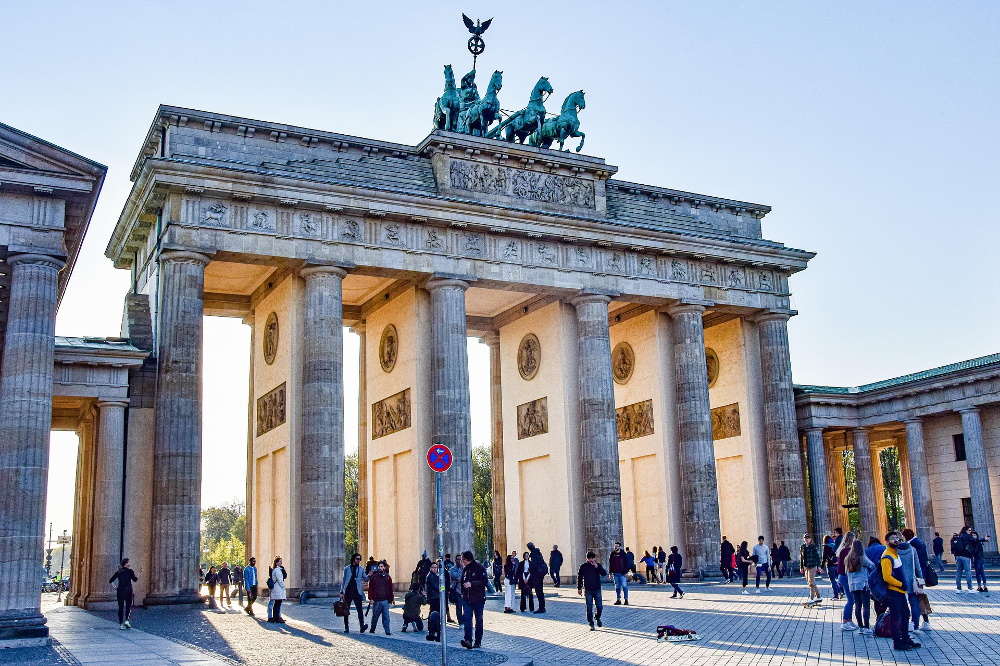
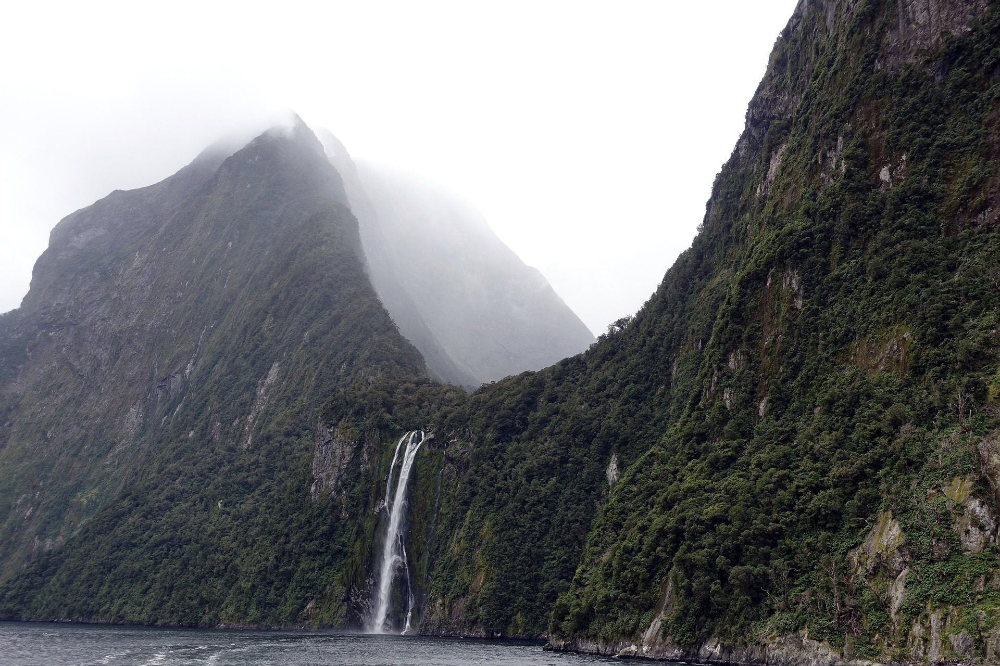
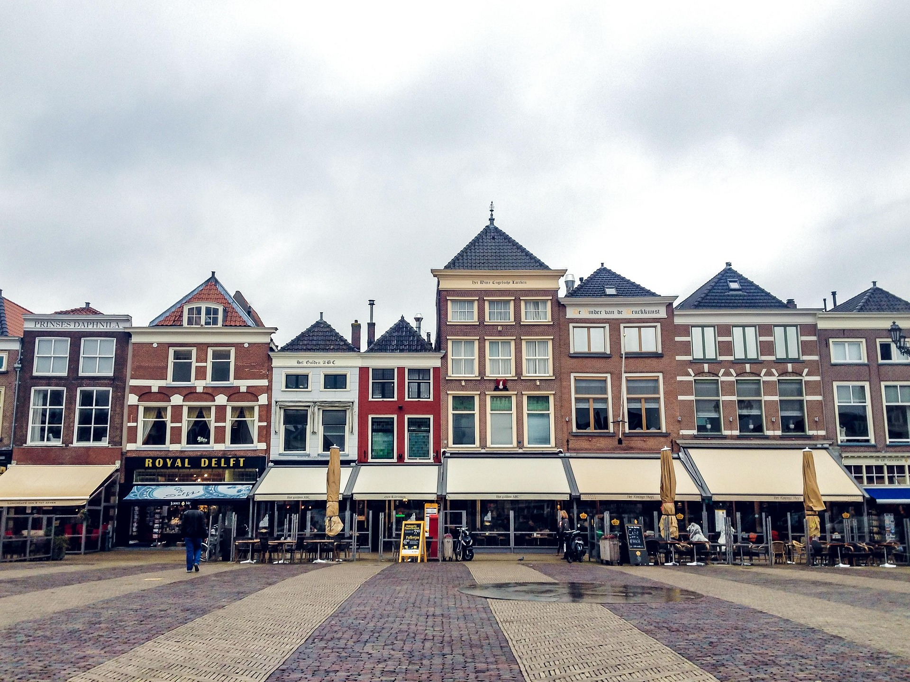
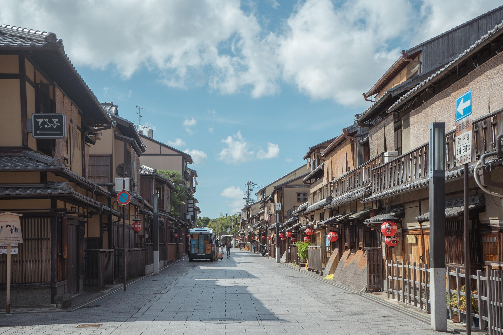
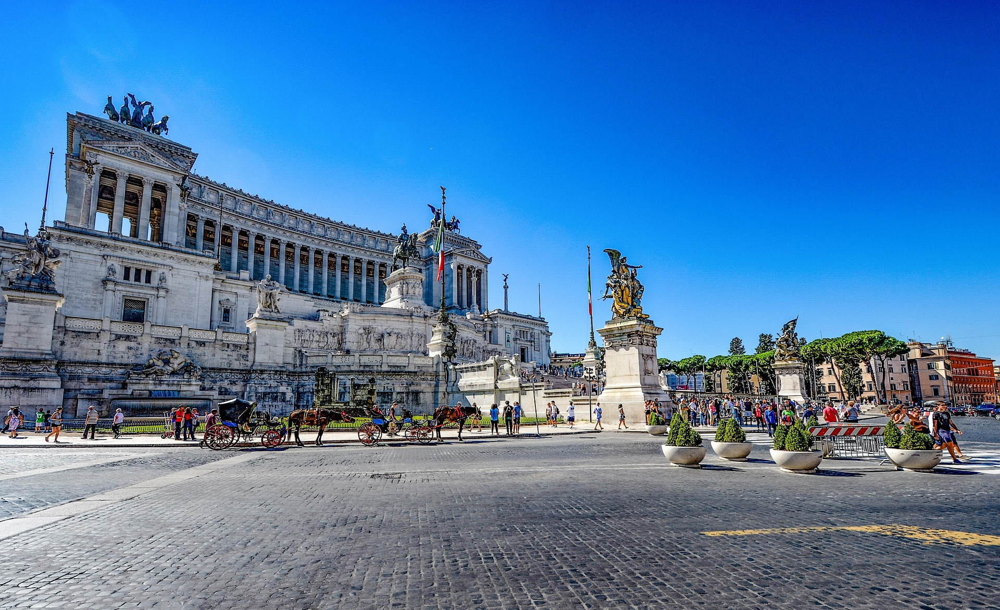
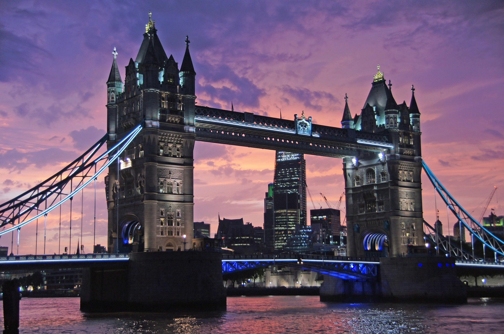
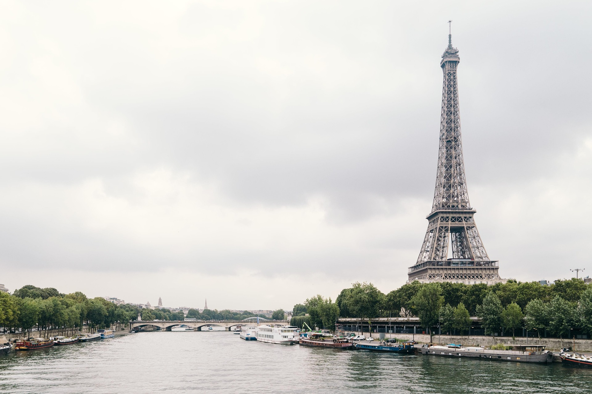
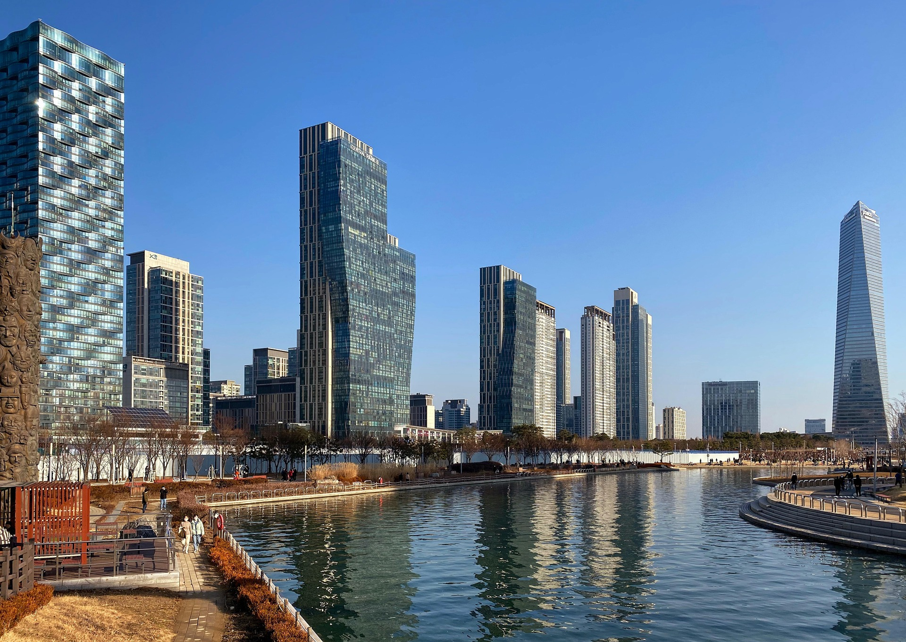
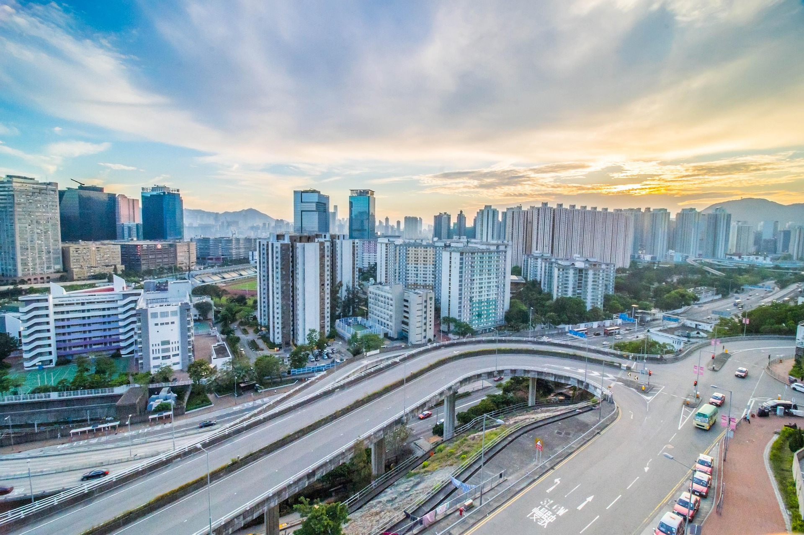
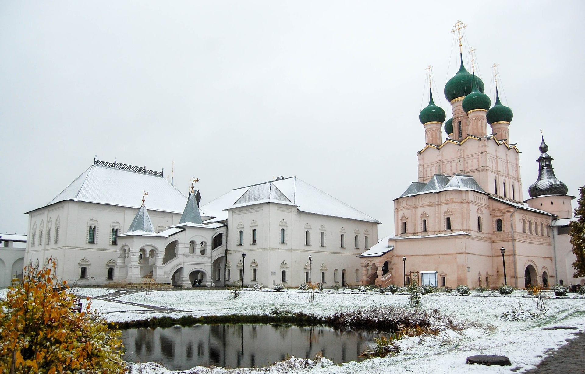

Pendahuluan
Capek kerja lembur terus setiap hari sampai lupa rasanya liburan? Baru juga hari Selasa, tapi rasanya otak udah mau meledak gara-gara dikejar deadline dan revisi yang nggak ada habisnya? Jangan sampai kesehatan mental Kamu tumbang cuma demi kerjaan, ya! Mengambil jeda buat healing dan traveling ke luar negeri tuh bukan lagi sekadar gaya hidup atau pamer di medsos, tapi udah jadi kebutuhan primer biar jiwa Kamu nggak gampang burnout.
Nah, biar Kamu nggak makin pusing mikirin mau kabur ke mana, kita udah ngerangkum 10 destinasi mancanegara terbaik yang wajib banget masuk ke bucket list Kamu tahun ini. Yuk, buruan rapihin kerjaan, siapin paspor, dan mari kita hunting.
Rangkuman Destinasi
- Jerman
- Selandia Baru (New Zealand)
- Belanda
- Jepang
- Italia
- United Kingdom (Inggris)
- Prancis
- Korea Selatan
- Hong Kong
- Rusia
1. Jerman: Harmoni Sejarah dan Teknologi Modern

Mengapa Jerman?
Jerman itu paket lengkap banget. Kamu bisa nemu kastil-kastil ala dongeng Disney yang super estetik, tapi di sisi lain, transportasinya serba modern dan tepat waktu banget (nggak pake drama ngaret). Negara ini seru banget buat Kamu yang pengen ngerasain festival bir (Oktoberfest) yang super ramai, atau sekadar pengen menyendiri di hutan pinus yang magis. Plus, Jerman itu aman banget buat solo traveler, jadi cocok buat Kamu yang pengen bener-bener me-time.
Pesona Kota dan Rekomendasi Tempat Indah
Tiap kota di Jerman punya vibe yang beda-beda. Berlin tuh cocok buat anak skena yang suka seni jalanan dan nightlife, sedangkan area Bavaria nawarin pemandangan alam yang kayak di kartu pos.
-
Munich
Kota yang terkenal dengan vibe santai, taman kota yang luas banget buat sepedaan, dan arsitektur klasik di Marienplatz.
-
Rothenburg ob der Tauber
Kota kecil yang bangunannya mirip rumah-rumah kayu di dongeng kuno. Instagrammable parah!
-
Füssen
Gerbang utama kalau lu mau ke Kastil Neuschwanstein—kastil asli yang jadi inspirasi logo istana Disney.
2. Selandia Baru (New Zealand): Surga Alam yang Menenangkan Jiwa

Mengapa Selandia Baru?
Kalau tujuan liburan Kamu adalah buat kabur dari polusi dan kemacetan kota, Selandia Baru adalah obat paling manjur. Di sini alamnya bener-bener masih perawan dan bersih banget. Kamu bakal disuguhin pemandangan danau yang super jernih, pantai pasir hitam yang eksotis, sampai gunung salju. Berada di sini tuh otomatis bikin Kamu pengen narik napas dalam-dalam dan langsung ngerasa rileks.
Pesona Kota dan Rekomendasi Tempat Indah
Selandia Baru terbagi jadi Pulau Utara dan Pulau Selatan, dan dua-duanya punya pemandangan yang bikin melongo.
-
Queenstown
Ibu kotanya para pencinta adrenalin. Lu bisa nyobain bungee jumping yang ekstrem, atau kalau mau santai tinggal nongkrong di pinggir Danau Wakatipu.
-
Rotorua
Kota unik yang penuh dengan kolam lumpur mendidih alami, pemandian air panas bumi, dan tempat terbaik buat belajar budaya suku Maori.
-
Auckland
Kota metropolitan modern yang dikelilingi pelabuhan. Cocok buat lu yang tetep pengen nge-mal tapi dapet bonus pemandangan laut.
3. Belanda: Negeri Kincir Angin yang Santai dan Estetik

Mengapa Belanda?
Belanda tuh tempat di mana orang-orangnya super santai alias chill. Kamu bakal jarang nemu orang stres di sini karena budaya mereka yang seneng naik sepeda ke mana-mana. Dengan kanal-kanal air yang romantis di tengah kota dan ladang bunga tulip yang warna-warni, Belanda bakalan manjain mata Kamu banget dan bikin mood langsung balik 100%.
Pesona Kota dan Rekomendasi Tempat Indah
Kota-kota di Belanda itu ramah banget buat pejalan kaki, jadi Kamu nggak bakal capek atau stres gara-gara macet.
-
Amsterdam
Wajib banget naik perahu keliling kanal-kanalnya yang bersejarah, atau sekadar melipir ke kafe-kafe estetik di pinggir air.
-
Giethoorn
Desa tanpa jalan raya! Ke mana-mana Kamu harus naik perahu atau jalan kaki lewat jembatan kayu yang super lucu.
-
Rotterdam
Kebalikan dari Amsterdam, kota ini modern banget dengan arsitektur futuristik yang unik kayak Cube Houses.
4. Jepang: Simfoni Tradisi Kuno dan Futurisme

Mengapa Jepang?
Siapa sih yang nggak jatuh cinta sama Jepang? Negara ini punya sihir yang bisa bikin stres Kamu ilang seketika. Kamu bisa nemu kuil kuno yang sunyi di tengah hutan bambu, tapi selangkah kemudian Kamu udah di tengah kota penuh lampu neon yang futuristik. Makanannya enak-enak, jalannya bersih tanpa sampah, dan super aman. Bener-bener tempat pelarian terbaik buat kaum pekerja kantoran.
Pesona Kota dan Rekomendasi Tempat Indah
Mau ke sini pas musim semi biar dapet sakura, atau musim dingin buat main salju? Dua-duanya sama-sama magis!
-
Kyoto
Pusatnya budaya Jepang. Kamu bisa foto-foto pakai Kimono di distrik Gion, atau jalan-jalan di antara pohon bambu raksasa di Arashiyama.
-
Tokyo
Kota super sibuk yang punya segalanya. Mulai dari nyebrang di persimpangan ikonik Shibuya sampai belanja barang anime di Akihabara.
-
Takayama
Kota tua di daerah pegunungan yang suasananya masih mirip banget sama zaman samurai dulu.
5. Italia: Romantisme Kuliner, Seni, dan Sejarah

Mengapa Italia?
Orang Italia punya prinsip hidup namanya La Dolce Vita, alias "menikmati hidup yang manis". Nah, prinsip ini yang harus Kamu tiru pas liburan ke sini. Italia adalah tempat terbaik buat manjain lidah Kamu lewat pasta dan pizza asli yang enak parah. Ditambah arsitektur kuno yang estetik di tiap sudut jalan, Kamu bakalan langsung lupa sama grup WhatsApp kantor yang berisik.
Pesona Kota dan Rekomendasi Tempat Indah
Dari kota mode papan atas sampai desa nelayan di pinggir tebing pantai, Italia nggak pernah ngebosenin.
-
Roma
Kota bersejarah tempat Kamu bisa liat Colosseum yang megah secara langsung atau ngelempar koin ke Trevi Fountain biar bisa balik lagi ke sini.
-
Florence (Firenze)
Kota seni yang super romantis, penuh dengan museum dunia dan katedral berukuran raksasa yang megah banget.
-
Positano (Amalfi Coast)
Desa tebing dengan rumah warna-warni yang langsung menghadap ke Laut Mediterania. Ini sih definisi surga dunia!
6. United Kingdom (Inggris): Keanggunan Kerajaan dan Lanskap Klasik

Mengapa United Kingdom?
Kalau Kamu suka sama hal-hal berbau kerajaan, Harry Potter, atau band-band legendaris kayak The Beatles, UK wajib masuk daftar. Jalan-jalan di sini tuh berasa kayak lagi main di dalam film-film klasik. Kamu bisa ngerasain mewahnya tradisi minum teh sore (afternoon tea) biar bisa bersantai elegan ala bangsawan Inggris.
Pesona Kota dan Rekomendasi Tempat Indah
Inggris punya perpaduan kota metropolitan yang sibuk dan pedesaan hijau yang menenangkan banget.
-
London
Kota megah tempat Big Ben dan Istana Buckingham berada. Jangan lupa foto di box telepon merah ikonik mereka, ya!
-
Edinburgh (Skotlandia)
Kota yang punya getaran mistis dan dramatis, lengkap dengan kastil tua di atas bukit batu vulkanik purba.
-
Bath
Kota spa kuno peninggalan Romawi yang arsitektur bangunannya estetik banget berwarna krem madu.
7. Prancis: Kiblat Seni, Mode, dan Kehidupan yang Elegan

Mengapa Prancis?
Liburan ke Prancis tuh intinya adalah tentang slow living. Duduk santai di kafe pinggir jalan sambil ngunyah croissant, jalan-jalan sore di sepanjang sungai, atau cuci mata ngeliat tren mode terbaru. Prancis ngajarin kita kalau hidup itu harus dinikmati pelan-pelan dengan gaya, bukan buru-buru dikejar target bulanan.
Pesona Kota dan Rekomendasi Tempat Indah
Nggak cuma Paris, Prancis juga punya pantai-pantai mewah dan desa-desa cantik yang mirip di film animasi.
-
Paris
Kota paling romantis di dunia. Piknik di rumput dekat Menara Eiffel atau liat lukisan Mona Lisa di Museum Louvre itu hukumnya wajib.
-
Nice & French Riviera
Sisi selatan Prancis yang punya pantai biru jernih, matahari hangat, dan tempat nongkrongnya para seleb dunia.
-
Colmar
Kota kecil yang dibilang mirip banget sama desa di film Beauty and the Beast karena rumahnya berwarna-warni dan penuh bunga.
8. Korea Selatan: Gelombang K-Culture dan Keindahan Alam Estetik

Mengapa Korea Selatan?
Buat para pencinta drakor atau K-Pop, negara ini pasti udah jadi destinasi impian. Tapi selain itu, Korea Selatan emang asyik banget buat tempat liburan. Kota-kotanya modern, transportasinya gampang, kafe-kafe buat nongkrongnya super niat dan estetik, plus street food-nya dijamin bikin Kamu kalap. Cocok banget buat seru-seruan bareng bestie Kamu.
Pesona Kota dan Rekomendasi Tempat Indah
Korea Selatan tuh pinter banget ngegabungin kecanggihan teknologi sama keindahan alam yang puitis banget di setiap musimnya.
-
Seoul
Kota yang hidup 24 jam. Lu bisa sewa Hanbok di Istana Gyeongbokgung, terus lanjut belanja skincare sampai tengah malam di Myeongdong.
-
Busan
Kota pantai yang lebih santai. Ada Pantai Haeundae yang hits dan Desa Gamcheon yang rumahnya warna-warni mirip Santorini.
-
Pulau Jeju
Tempatnya orang Korea asli kalau lagi butuh healing. Isinya tebing pantai yang keren, air terjun, dan padang bunga yang luas banget.
9. Hong Kong: Gemerlap Kota Metropolitan dan Surga Kuliner

Mengapa Hong Kong?
Punya jatah cuti mepet tapi pengen tetep eksis ke luar negeri? Hong Kong jawabannya! Jaraknya nggak terlalu jauh dari Indonesia, tapi Kamu udah bisa ngerasain vibe kota megapolitan dunia. Hong Kong itu surganya belanja barang-barang bermerek bebas pajak dan tempat paling pas buat Kamu yang hobi wisata kuliner legendaris (dimsum-nya juara!).
Pesona Kota dan Rekomendasi Tempat Indah
Hong Kong tuh unik karena gabungan antara budaya Tiongkok tradisional dan modernitas Barat yang kental banget.
-
Victoria Peak
Spot paling tinggi buat ngeliat pemandangan gedung pencakar langit Hong Kong yang super megah, apalagi pas malam hari.
-
Tsim Sha Tsui
Area pinggir laut yang asyik buat jalan-jalan santai sambil nungguin pertunjukan lampu dan musik A Symphony of Lights.
-
Lantau Island
Tempat Kamu bisa naik kereta gantung kaca Ngong Ping 360 buat ngeliat patung Buddha raksasa yang tenang di puncak bukit.
10. Rusia: Kemegahan Arsitektur dan Kekayaan Sastra Dunia

Mengapa Rusia?
Kalau Kamu bosen sama destinasi Eropa yang gitu-gitu aja, coba deh ke Rusia. Negara terbesar di dunia ini punya arsitektur yang megah dan beda banget, terutama bangunan dengan kubah berbentuk bawang berwarna-warni. Liburan ke sini bakal ngasih Kamu pengalaman baru yang beda dari yang lain, mulai dari nonton pertunjukan balet kelas dunia sampai ngerasain musim dingin yang magis ala film-film.
Pesona Kota dan Rekomendasi Tempat Indah
Kota-kota besar di Rusia dibangun dengan skala yang raksasa dan mewah, berasa banget sisa-sisa kemegahan kekaisarannya.
-
Moskow
Ibu kota Rusia tempat Red Square berada. Di sini ada Katedral Saint Basil yang ikonik banget dengan kubah warna-warninya yang mirip es krim.
-
St. Petersburg
Kota budaya yang penuh dengan kanal air cantik, jembatan gantung, dan Istana Hermitage yang gedenya luar biasa.
-
Kazan
Kota unik tempat perpaduan budaya Rusia dan Tatar, di mana masjid megah dan gereja ortodoks kuno bisa berdiri berdampingan dengan damai.
Penutup
Traveling ke luar negeri itu sebenernya bukan cuma soal jalan-jalan, buang-buang duit, atau sekadar menuhin feeds Instagram Kamu biar keliatan keren. Liburan itu adalah investasi terbaik buat kesehatan fisik dan mental Kamu sendiri.
Waktu Kamu berani mutusin buat logout sebentar dari penatnya rutinitas kerja, Kamu lagi ngasih kesempatan buat otak dan hati Kamu buat refreshing dan bernapas lega. Tiap negara yang Kamu datengin bakal ngasih petualangan baru, ngebuka cara pandang Kamu tentang dunia, dan ngenalin Kamu sama orang-orang baru dengan budaya mereka yang unik.
Pas balik ke rumah nanti, Kamu nggak cuma bawa oleh-oleh atau foto estetik doang, tapi Kamu bakal bawa pulang energi baru, pikiran yang lebih fresh, dan badan yang siap buat ngadepin tantangan kerjaan lagi dengan penuh semangat.
Jadi, stop tunda-tunda waktu liburan Kamu. Kerja mah nggak bakal ada habisnya sampai pensiun, tapi momen pas Kamu masih sehat dan punya energi buat keliling dunia tuh ada batasnya!
Nah, dari 10 destinasi mancanegara yang udah kita bahas di atas, negara mana nih yang paling bikin Kamu gatel pengen langsung co tiket pesawat sekarang juga?
Sponsor
Slot Iklan 1
Slot Iklan 2